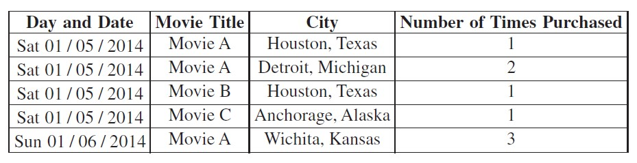

A cable television company stores information about movie purchases made by subscribers. Each day, the following information is summarized and stored in a publicly available database.
- The day and date each movie was purchased
- The title of each movie purchased
- The cities where subscribers purchased each movie
- The number of times each movie was purchased by subscribers in a given city
A sample portion of the database is shown below. The database is sorted by date and movie title.

Which of the following CANNOT be determined using only the information in the database?